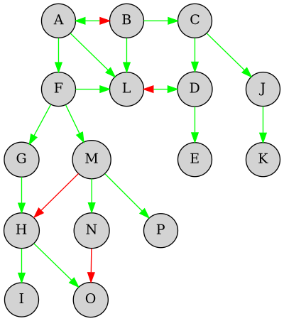
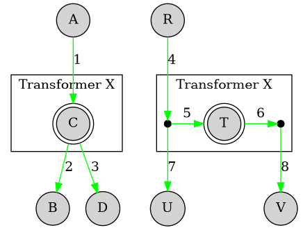
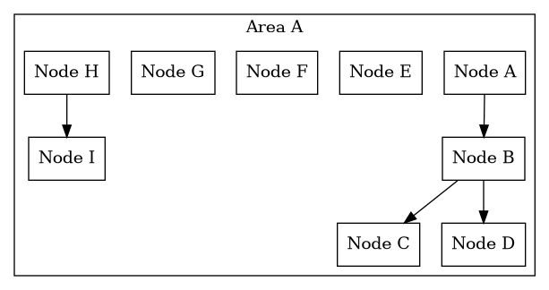
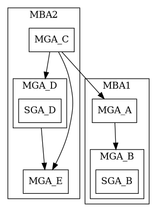
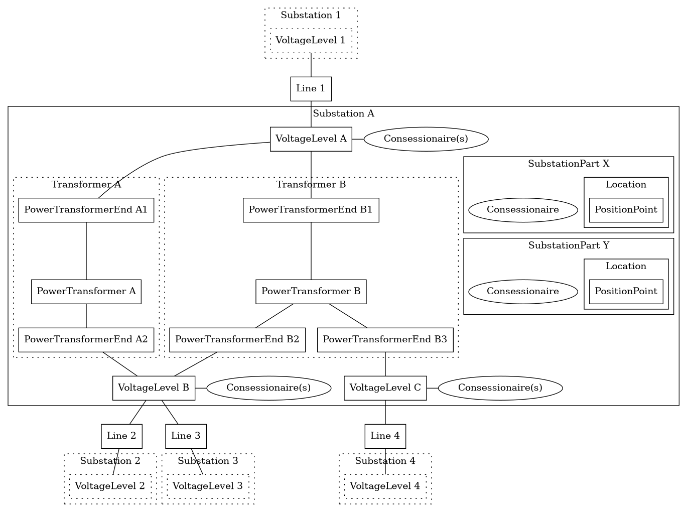
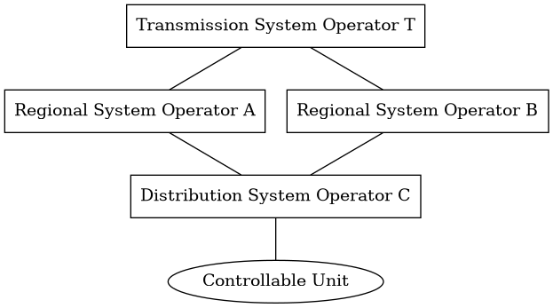
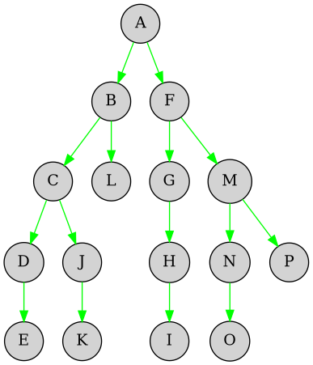

Grid Model
Work in progress
This document is very much work in progress. It highlights some existing models and ideas connected to a possible grid model used in a flexibility information system. In its current state, the document is intended as input for discussion.
A grid model is a simplified representation of the physical grid. It should contain geographical or topological information about the grid. Its use would be to support data exchange and aggregation in the value chain of flexibility.
Introduction
Flexibility is intended to deliver services in the physical grid: balancing, congestion and voltage. As such, a grid model must be a physical representation of the grid. However, a model can and should be used to simplify the complexity of the real world.
The physical grid is split in different levels depending on the voltage level and ownership.
- Transmission grid - masked transmission grid operated by TSO
- Regional grid - generally, regional grids can be operated radially from a transmission grid point, meshed from a transmission network point, or meshed between two transmission network points. Operated by DSO, but currently TSO is responsible for handling bottlenecks.
- Distribution grid - radial, but with some reduntant connections that allows the SO to switch/route power in different directions
Difficulties in making a simple model
As stated above, the grid can be thought of as a complex mesh of nodes and edges. It is not a simple tree structure where aggregation of resources can be done by simply moving up the tree. The grid is also not static, but dynamic, and flows/directions are changing all the time. This might require us to have a more complex model than what we would like to have.
In the diagrams we are trying to show some example challenges related to the grid model. Nodes in the grid are either drawn as circles or points. Nodes can be grid stations, junction points or similar. Edges are connections like power lines or cables, and are drawn as lines with arrows. The the arrows on the edge indicate the direction of flow. The color of the edge indicate if the edge and/direction direction is active (green) or not (red)
.
If a node represents a transformer (station), then it might be important to know
on which side of the transformer the edges are connected. In the following
example diagram, C and T represents the same transformer, but the two graphs
are modelling it in different ways.
In the first graph edges 1, 2 and 3 are simply connected to the node, but does not indicate on which side of the transformer they are connected. In the second graph, the edges are connected junctions and the junctions are connected to the transformer.
If the transformer had a capacity problem (think over-heating), then knowing on
which side the edges are connected is important since we see in the second graph
that disconnecting/lowering consumption in U does not actually help the
transformer.
.
Existing models
There are a few existing models that are relevant for the discussion.
NODES
In the NODES platform, the local market platform in EuroFlex, system operators define one or more grid areas. An area is then divided into grid nodes. Nodes can exist in a hierarchy, where a node can be a parent to other nodes. The following diagram shows this.

Assets (controllable units) are connected to the "lowest level" node, and the
node hierarchy is used when aggregating assets into portfolios. If assets in a
portfolio are connected to node B, C and D in the diagram, then the
portfolio is connected to node B and can also be used for bids in node A.
Nodes in NODES can also be linked between system operators, in a hierarchy. Meaning that a node in a "sub" system owners area can be linked to a node in a "parent" system owners area.
Balancing markets - station groups
In Statnett's balancing markets, there is no actual grid model being communicated. When a (B)SP wants to deliver balacing services, part of the process includes requesting station groups (stasjonsgrupper) for the resource(s). Statnett creates station groups based on its own knowledge of the grid and the information about the resource(s) provided by the (B)SP.
A station group is defined not only based on the physical reference in the grid, but also:
- same balance responsible party (BRP)
- no bottlenecks
- same (production) technology
As part of the qualification process done by Statnett, impacted DSOs are given an opportunity to comment on the application.
A 2018 report from Statnett highlights the importance of getting more geographical information as part of the bids suggests three high-level solutions:
- splitting station groups or defining new geographical levels
- more detailed geographical information in bids
- including geography in prequalification and approval from grid owners. This could include defining "problem areas" in the grid that cannot be part of the balancing markets.
Balance Settlement Grid Model
The grid model used in balance settlement is described here.

The model consists of three types of areas:
- Marked Balance Areas (MBA) aka price area
- Metering Grid Area (MGA) aka settlement areas
- Sub-Grid Areas (SGA) e.g. malls and industrial areas/parks
MBAs contains MGAs, and MGAs contains SGAs. Both MGAs and SGAs contain accounting points (AP), where energy is either consumed or produced (or both). MGAs are defined by Statnett as settlement responsible together with the system operators. The division of MGAs is based on the grid topology (e.g. bottlenecks) and the ownership of the metering points within the area.
The sub-grid area is connected to MGA via an accounting point in the parent MGA. In addition to this, there are individual accounting points inside the SGA - e.g. stores in a shopping center. There can be different energy suppliers in the accounting points and the SGA is settled by the sub-grid operator. It is assumed that controllable units in the flexibility register will always be referred to the accounting point in the MGA.
There are 123 grid owners and 354 MGAs and SGAs. The MGAs are divided into the following types:
- 17 Transmission
- 52 Regional
- 37 Industrial
- 117 Production
- 92 Distribution
In addition there are 37 sub-grids.
Simplified National Grid Model (Elbits)
"Forenklet Nasjonal Nettmodell" (FNN) is a model developed by Elbits to facilitate easier exchange of basic information about the power grid in Norway. It is a simplification of the CIM100 standard and currently has a data foundation from FOS at Statnett.
The model aims to be a reference for central elements in the grid and covers the transmission and regional grids across the entire country. Work is underway to include distribution. It will have common names and IDs for each component, making the grid understandable for both humans and machines.
The model includes grid elements and their connections, but e.g. not include switches, breakers etc. It is distributed in a JSON-LD format and looks like a directed graph, but the line direction is random and does not indicate flow.
The following is an example derived from the FNN model definition (and not from model data itself). It just provides another view on how the model i structured and how different types are connected.

System operators and ownership
The balance settlement grid model allows us to understand how the operation of the grid is split between different system operators. This can be interesting to look at since controllalbe units connected to a distribution grid can be/is used to deliver services in regional or central grids. In NCDR-speak, we can use it to consider who will be connecting, procuring and impacted system operators of a given asset.
What we see is that some controllable units, depending on the flow of energy, can have multiple procuring system operators and multiple impacted system operators, even if we are only considering the hierarchy of the grid model (and not defining adjacent system operators as "impacted"). The following is an example drawn from the analysis.

In the diagram, the controllable unit can be used to deliver services for all the system operators. Activation can also impact all the system operators.
There are also other "edge" cases where we see chains of system operators. Some cases shows a chain of four or more different system operators. Examples are:
- Transmission -> Regional -> Distribution -> Distribution
- Transmission -> Regional -> Production -> Industrial -> Distribution
Further analysis must be done to understand the details in the grid. We are just looking at a very simplified model that e.g. does not account for how the grid is switched. The key takeaway, however, is that we must support having multiple system operators related to the controllable units. It is not the case of "just" one local and one central system operator/market for one controllable unit.
(Possible) Use Cases
This section outlines some possible needs for a grid model in the flexibility value chain. Some of these requirements are based on draft network code on demand response.
Knowing the location of a controllable unit
The grid model will be used to place the controllable units in the grid - to map accounting point ids to physical assets in the grid and to responsible system operators. This requires unique identification of all nodes and edges. The purpose of this placement is to facilitate aggregation and data exchange (see further requirements).
For service providers, knowing the location of the controllable unit can allow them to prioritize which units to get ready for market. This can be based on the current tenders in the market(s).
If the flexibliity information system knows the grid location of all accounting points in advance (and not requiring grid owners to add that information), we can also provide "synchronous" registration processes that includes assignment to grids.
Some accounting points are located in sub-grid areas. The value chain must be able to identify the relation between the accounting points in an SGA with the accounting point for the connection point in the surrounding MGA. FIS can get this information from Elhub.
Aggregation to service providing groups
Flexibility resources are distributed across many different locations in the grid, many of which are connected in the lowest level: in the distribution grid. And a grid model can be used to aggregate these resources. In a simple case, where the grid is a tree, the aggregation can be done by aggregating the resources in the same branch up to a certain node where services are needed.

Example: CUs connected to M,N,O and P can be used to deliver services in node M, if there is a congestion issue on the edge between F and M.
However, we do know that the grid is not as simple as this, so we must figure out a way to aggregate resources reliably in a more complex grid.
The grid model can also be used by system operators to identify SPGs to "arm" reservation contracts or end users in underlying system operator grids.
Identifying Impacted System Operators for SPG Grid Prequalification
Impacted System Operators (ISO) should do grid prequalification of service providing groups. A grid model can be used to identify which system operators are impacted by activation of services from a certain SPG. Network Code Demand Response (NCDR) definitions:
impacted system operatormeans any DSO or TSO significantly impacted by congestion or voltage issues on the grid of another system operator, or significantly impacted by balancing and local services bids from SPU or SPG connected to another system, or whose system or system users may provide solutions to these issues, or whose data on the system or the system users are necessary to forecast, detect or solve such issues;
grid prequalificationmeans the process by the connecting system operators and the impacted system operators to ensure that the delivery of balancing or local service(s) by a SPU, a SPG or parts of a SPG does not compromise the safety and operational conditions of connecting and impacted grids;
Temporary limits
NCDR defines a flexibility information system as:
flexibility information systemmeans a system to record at least the qualification of service providers, the product prequalification, product verification and grid prequalification of SPUs and SPGs, the temporary limits set by system operators and the switch of controllable units for the provision of balancing and local services and to exchange of data for such processes;
... and article 58 states:
The connecting system operators and impacted system operators shall have the right to set or update temporary limits on grid elements, bids, SPUs, SPGs or parts of SPGs in the operational planning to ensure that the delivery of the balancing or local services does not compromise the safe operation of the transmission and distribution systems.
To be able to set and communicate limits on grid elements, those grid elements must be modelled in the system.
Data exchange in observability areas
Network Code Demand Response (NCDR) define "observability areas" for distribution system operators. Other regulation has this concept for TSO already. They are defined for the purpose of clarifying data exchange scope and scope of coordination.
DSO observability areameans a DSO’s own distribution system and parts of other system operators’ distribution and transmission systems that are relevant for the operation of the DSO distribution system;
"Operation" could also mean DF (driftsmessig forsvarlig) or FOL (Forskrift om leveringssikkerhet) analysis.
A grid model can be used to define these areas and will allow a flexibility information system to give the correct data access and notifications to the eligible system operators.
Data exchange between SOs and from FIS to SO include:
structure datasuch as substations, lines, transformers, SGUs, reactors/capacitorsschedule and forecast datasuch as planned outages, schedules, production plans, baselines, forecasts, temporary limitsreal-time datasuch as actual topology, busbar voltages, active and reactive power flows and real time measurementsactivationssuch as activation of balancing services with a controllable unit in a distribution grid
Challenges
The following is a list of issues that we must tackle.
- The grid is not a tree, but a mesh. How do we model the grid in a way that allows for aggregation of resources?
- The grid is not static, but dynamic. That is problematic for aggregation and
buying from groups. How do we model the grid in a way that allows for changes
in the grid? We believe that system operators will do more topological
manouvers in the future as the load on the grid increases.
- One strategy used in NODES is to define nodes on a low level/below possible switches.
- This can also be challenging for long term contracts. What if the grid has been changed from bid to activation?
- Is the current state of the grid sensitive? Can it be shared with all parties in the value chain?
- How can we build a grid model incrementally so that we can get value early on and not wait for the "full" model? Making a complete, "perfect" national grid model for flexibility will take time.